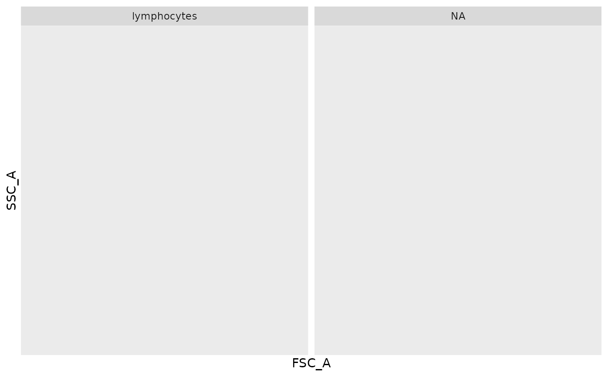

Create a column (logical) for selecting scatter/population-specific events
Source:R/select_logical.R
select_population.RdA new column (logical) named select.population is created in [['data']] along with a respective annotation column (character) named population. Through the defined population argument, a specific column in [['data']] – a cluster of differentiation (CD)/lineage surface marker – is used to derive a scatter/population-specific landmark/profile for restricting cellular events to a population-of-interest. Classical/specific cell types (e.g., lymphocytes (CD3+), monocytes (CD14+)) can be defined in this fashion.
Based on the the defined population argument:
the top 25% expressing events in the
'marker'column are indexed;contour lines are derived using kde2d on the indexed events;
the contour line that meets the
threshold(% of events in-bounds) is derived;the 'in-bounds' contour line is applied to the entire concatenate to generate both a logical and annotation column
Arguments
- flowstate
A
flowstateas returned from read.flowstate.- population
Named character vector – default
NULL;populationMUST be defined. The named character vector should take the following form:c(population.name = 'marker'), wherepopulation.nameis a cell-type annotation and'marker'is a CD/lineage marker used to stain those respective cell types.e.g.,
c(lymphocytes = 'CD3');c(monocytes = 'CD14')
- bandwidth.adjust
Numeric – default
4; adjusts the 'smoothness' of the density estimation- threshold
Numeric – default
0.75; fraction of cells/events bound by a contour line.- plot
Logical – default
FALSE; plot the derived contour line.
Value
UPDATES BY REFERENCE:
flowstate[['data']]:adds a column (logical) named
select.populationadds a column (character) named
population– indexed againstselect.population
Invisibly returns flowstate.
Examples
fcs.file.paths <- system.file("extdata", package = "flowstate") |>
list.files(full.names = TRUE, pattern = "BLOCK.*.fcs")
#read all .fcs files as flowstates; concatenate into a single object
fs <- read.flowstate(
fcs.file.paths,
colnames.type = "S",
concatenate = TRUE
)
#> COVAIL_002_CYTOKINE_BLOCK1_1.fcs --> flowstate
#> COVAIL_002_CYTOKINE_BLOCK1_2.fcs --> flowstate
#> COVAIL_002_CYTOKINE_BLOCK1_3.fcs --> flowstate
#> Concatenating 'flowstates'...
#transform
flowstate.transform(fs)
#> flowstate --> transforming...
#UPDATES BY REFERENCE -- adds two columns: 'select.population' and 'population'
select_population(fs, population = c(lymphocytes = 'CD3'))
fs$data[, .N, by = .(select.population, population)]
#> select.population population N
#> <lgcl> <fctr> <int>
#> 1: FALSE <NA> 2055
#> 2: TRUE lymphocytes 3945
#visualize
plot(fs, FSC_A, SSC_A) + ggplot2::facet_wrap( ~ population)
#> Warning: Computation failed in `stat_binhex()`.
#> Caused by error in `compute_group()`:
#> ! The package "hexbin" is required for `stat_bin_hex()`.
#> Warning: Computation failed in `stat_binhex()`.
#> Caused by error in `compute_group()`:
#> ! The package "hexbin" is required for `stat_bin_hex()`.

#subset to retain only population-specific events
fs <- subset(fs, population == 'lymphocytes')
fs$data[, .N, by = .(select.population, population)]
#> select.population population N
#> <lgcl> <fctr> <int>
#> 1: TRUE lymphocytes 3945
#after the subset, the logical column is now redundant; save the annotation
all(fs$data[['select.population']])
#> [1] TRUE
#NULL it out
fs$data[,'select.population' := NULL]
#> Time SSC_W SSC_H SSC_A FSC_W FSC_H FSC_A SSCB_W SSCB_H
#> <num> <num> <num> <num> <num> <num> <num> <num> <num>
#> 1: 4 768520.5 599195 767489.4 729628.4 827274 1006004.3 730502.3 579392
#> 2: 4 707174.8 516909 609241.7 719956.1 819074 982828.9 700778.6 463030
#> 3: 5 743404.2 484976 600888.7 764667.1 754833 961993.2 726898.2 419073
#> 4: 8 724696.1 464423 560942.6 729720.8 794040 965712.5 703710.8 401969
#> 5: 11 735700.2 585228 717587.3 737012.2 916776 1126125.1 707943.4 539981
#> ---
#> 3941: 2454 755967.8 529870 667607.8 752809.6 781192 980148.1 748563.8 386375
#> 3942: 2454 681458.6 362164 411332.9 704912.6 856891 1006722.2 675241.8 333285
#> 3943: 2455 677347.4 701711 792170.2 702094.4 810637 948572.9 668789.1 506809
#> 3944: 2455 696805.0 546994 635246.9 734241.6 960241 1175081.5 696149.9 465449
#> 3945: 2455 717597.9 481212 575527.9 713571.4 772944 919251.3 712120.8 452721
#> SSCB_A CD45RA CD45RO TCRgd CD45BC1 IL2
#> <num> <num> <num> <num> <num> <num>
#> 1: 705412.0 -0.2470649 2.7199076 0.42499041 0.02931124 0.002875278
#> 2: 540802.5 0.6402557 1.0834556 1.47050773 2.52534304 -0.286119841
#> 3: 507705.7 -0.3323608 2.8483141 0.95952195 3.09759163 -0.127382318
#> 4: 471449.8 2.3510677 0.6920898 0.48665646 -0.04380552 0.027077111
#> 5: 637126.7 1.8807917 0.9204280 0.57483949 0.09541952 -0.477482264
#> ---
#> 3941: 482043.9 1.4767335 0.4264906 0.55609505 1.91829081 -0.221414160
#> 3942: 375079.9 1.9744866 0.4855015 0.63566630 2.78721332 -0.069965438
#> 3943: 564913.9 0.6691388 0.5834009 0.45495254 -0.20379971 -0.149373139
#> 3944: 540037.1 0.3137090 2.5537604 -1.05616639 2.59122142 -0.345124066
#> 3945: 537320.1 0.7515709 1.0826886 0.01604491 1.15698274 -0.388759405
#> CD8 CD197 CD45BC2 CD45BC3 CD57 CD193
#> <num> <num> <num> <num> <num> <num>
#> 1: -0.07537308 0.1394232 0.221454119 2.1781596 0.5285062 0.18497058
#> 2: 0.22413649 0.3200305 -0.060624216 0.6324386 0.8329555 0.01681209
#> 3: 0.04736568 0.5260895 -0.181077517 0.9196392 1.2416150 0.03452835
#> 4: 0.21944918 0.2553062 2.258232048 0.6410025 0.5820771 0.01482525
#> 5: 4.15152182 0.3097657 3.007598815 1.7224304 0.6413059 0.38610402
#> ---
#> 3941: 3.25657085 1.1282877 2.573546353 1.6551860 0.7314523 0.08843720
#> 3942: 0.89578615 1.1070193 -0.020792172 0.6242733 0.5823043 0.06865744
#> 3943: -0.10649677 0.2172071 -0.007154095 1.5797494 1.1161867 -0.06789374
#> 3944: 3.78228758 0.1653123 0.816983086 1.6096684 0.3560706 0.11389195
#> 3945: 3.89311017 0.3112947 0.323274511 1.9627009 -0.1271375 0.16204775
#> CD45BC4 CD127 CD56 CD199 CD49a GranzymeB
#> <num> <num> <num> <num> <num> <num>
#> 1: 2.50902951 0.39827699 -0.3097284 0.36984053 0.10228633 0.4111196
#> 2: 2.53696619 0.67378862 -0.3552034 0.21008710 0.04358495 0.9020600
#> 3: 0.20317909 0.99203369 0.2890994 0.59912921 -0.15121887 0.3605579
#> 4: 0.06710933 0.21912481 0.3262957 0.27282954 0.13649536 2.4990215
#> 5: 0.19485963 0.05449038 1.8089308 0.19710345 0.26069811 2.1253309
#> ---
#> 3941: 0.14893465 0.23683864 0.3587825 0.30724193 0.05792273 0.3401447
#> 3942: 2.36004109 0.20043098 0.2651959 0.15327944 0.18236537 0.4410127
#> 3943: 1.53575739 -0.10556378 0.2869923 0.18433622 0.36100071 4.1810228
#> 3944: 0.28483815 0.29026873 0.5406996 0.01392175 0.24232233 0.4616495
#> 3945: 2.23598496 0.59443819 -0.4291759 0.24747923 0.23265734 0.2892711
#> CD45BC5 CD95 CD3 CD4 CD69 TNFa
#> <num> <num> <num> <num> <num> <num>
#> 1: 1.83385994 0.18342249 2.37362055 3.0389426 0.33745353 0.16262134
#> 2: 2.08376736 -0.04675416 3.01898121 0.9824303 1.06530766 0.10870415
#> 3: 1.90414725 0.73400722 2.76351777 2.8095455 0.34187409 0.41362935
#> 4: 0.07806598 0.01255547 0.05079031 1.0232478 2.54888957 0.18688557
#> 5: 2.47805322 0.01157148 2.25650550 1.3292463 0.65763339 0.28751274
#> ---
#> 3941: 0.01805032 0.10407491 2.96421569 0.9984873 0.20297311 0.07247157
#> 3942: 0.16992510 0.25472133 0.22108311 0.5370170 0.81398521 -0.05947342
#> 3943: -0.05655034 -0.47791574 0.21997191 0.2438694 0.02834284 0.31989659
#> 3944: 0.05106530 0.03560712 2.23361417 0.8138703 0.60032416 0.94063443
#> 3945: 0.08725409 0.15002880 2.61817586 1.1960332 0.58147692 0.40816981
#> CD183 IFNg CD103 CD45BC6 CD122 ia4b7
#> <num> <num> <num> <num> <num> <num>
#> 1: -0.08047263 0.07897691 -0.016781683 0.38182910 -0.34775417 -0.06421969
#> 2: -0.17537332 -0.03203706 -0.197617536 0.34049109 -0.09530003 0.09739852
#> 3: -0.59861754 0.00556097 0.031120678 -0.16426801 -0.13013797 -0.38354094
#> 4: -0.17002190 0.01278163 0.126908686 0.63246716 -0.02536192 -0.20713411
#> 5: -0.11636406 0.04977157 -0.109270786 0.34283680 0.03665078 -0.01441000
#> ---
#> 3941: -0.10381037 0.06009857 -0.066759366 0.06645741 0.02427680 0.24056226
#> 3942: -0.05725193 0.04123291 -0.048209601 2.08779599 0.11879013 0.50354839
#> 3943: -0.24981715 -0.26144068 -0.664655057 1.50539922 0.08400778 0.40524360
#> 3944: -0.15688068 -0.28882696 -0.007405709 0.17537962 0.02251314 0.03999534
#> 3945: -0.15752388 -0.23164842 -0.004791846 1.77689384 0.01874891 0.17845059
#> CD45BC7 Viability CD27 KLRG1
#> <num> <num> <num> <num>
#> 1: 0.09550062 0.10841467 -0.08966891 1.299490619
#> 2: -0.18382007 0.20431878 0.06644138 1.760542679
#> 3: 1.83632802 0.15839596 -0.08930684 0.145310328
#> 4: 2.03323817 0.24359650 -0.27208764 1.185608645
#> 5: -0.02182072 0.58668829 -0.84340231 1.243605785
#> ---
#> 3941: 0.08948143 0.05401049 0.52100895 -0.003516618
#> 3942: 0.09389797 0.15050223 -0.15401834 0.161060456
#> 3943: -0.09233305 0.76145557 -0.08473685 0.208461477
#> 3944: 1.65542359 0.36379373 -0.28865046 0.619277393
#> 3945: -0.09068621 0.33323843 -0.41485464 0.886418310
#> sample.id population
#> <fctr> <fctr>
#> 1: COVAIL_002_CYTOKINE_BLOCK1_1 lymphocytes
#> 2: COVAIL_002_CYTOKINE_BLOCK1_1 lymphocytes
#> 3: COVAIL_002_CYTOKINE_BLOCK1_1 lymphocytes
#> 4: COVAIL_002_CYTOKINE_BLOCK1_1 lymphocytes
#> 5: COVAIL_002_CYTOKINE_BLOCK1_1 lymphocytes
#> ---
#> 3941: COVAIL_002_CYTOKINE_BLOCK1_3 lymphocytes
#> 3942: COVAIL_002_CYTOKINE_BLOCK1_3 lymphocytes
#> 3943: COVAIL_002_CYTOKINE_BLOCK1_3 lymphocytes
#> 3944: COVAIL_002_CYTOKINE_BLOCK1_3 lymphocytes
#> 3945: COVAIL_002_CYTOKINE_BLOCK1_3 lymphocytes